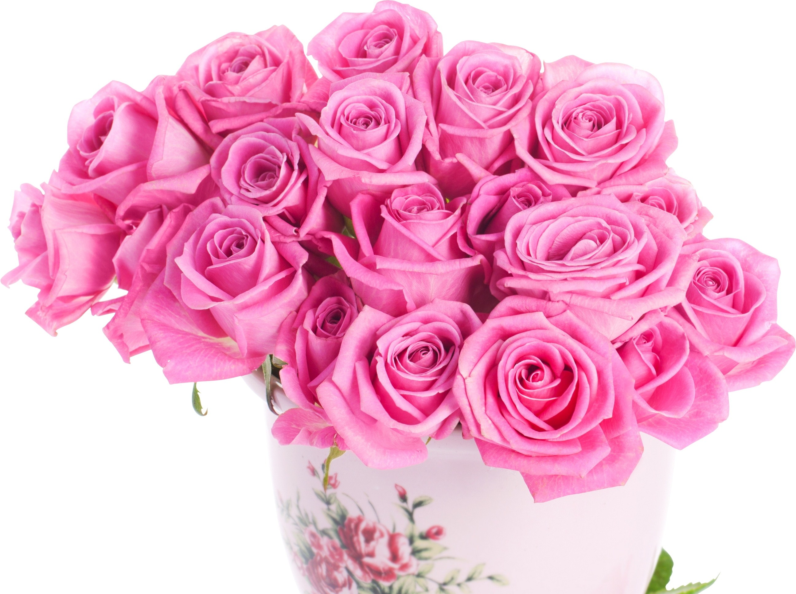
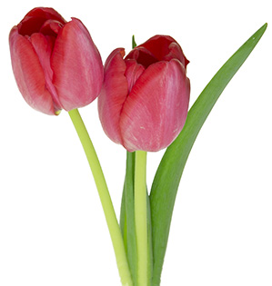
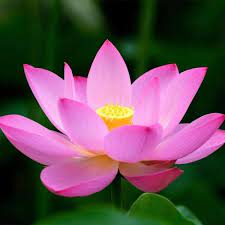
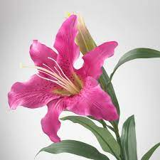

ROSE
 A rose is a woody perennial flowering plant of the genus Rosa, in the family Rosaceae, or the flower it bears. There are over three hundred species and tens of thousands of cultivars. They form a group of plants that can be erect shrubs, climbing, or trailing, with stems that are often armed with sharp prickles.
Scientific name: Rosa
Order: Rosales
Family: Rosaceae
Kingdom: Plantae
TULIP
Tulips are a genus of spring-blooming perennial herbaceous bulbiferous geophytes. The flowers are usually large, showy and brightly colored, generally red, pink, yellow, or white. They often have a different colored blotch at the base of the tepals, internally.
Scientific name: Tulipa
Order: Liliales
Family: Liliaceae
Kingdom: Plantae
Tribe: Lilieae
SUNFLOWER
Helianthus is a genus comprising about 70 species of annual and perennial flowering plants in the daisy family Asteraceae. Except for three South American species, the species of Helianthus are native to North America and Central America.
Scientific name: Helianthus
Family: Asteraceae
Subfamily: Asteroideae
Order: Asterales
Kingdom: Plantae
Tribe: Heliantheae
LOTUS
Nelumbo nucifera, also known as Indian lotus, sacred lotus, or simply lotus, is one of two extant species of aquatic plant in the family Nelumbonaceae. It is sometimes colloquially called a water lily, though this more often refers to members of the family Nymphaeaceae.
Scientific name: Nelumbo nucifera
Order: Proteales
Family: Nelumbonaceae
Kingdom: Plantae
LILY
Lilium is a genus of herbaceous flowering plants growing from bulbs, all with large prominent flowers. They are the true lilies. Lilies are a group of flowering plants which are important in culture and literature in much of the world.
Scientific name: Lilium
Order: Liliales
Family: Liliaceae
Kingdom: Plantae